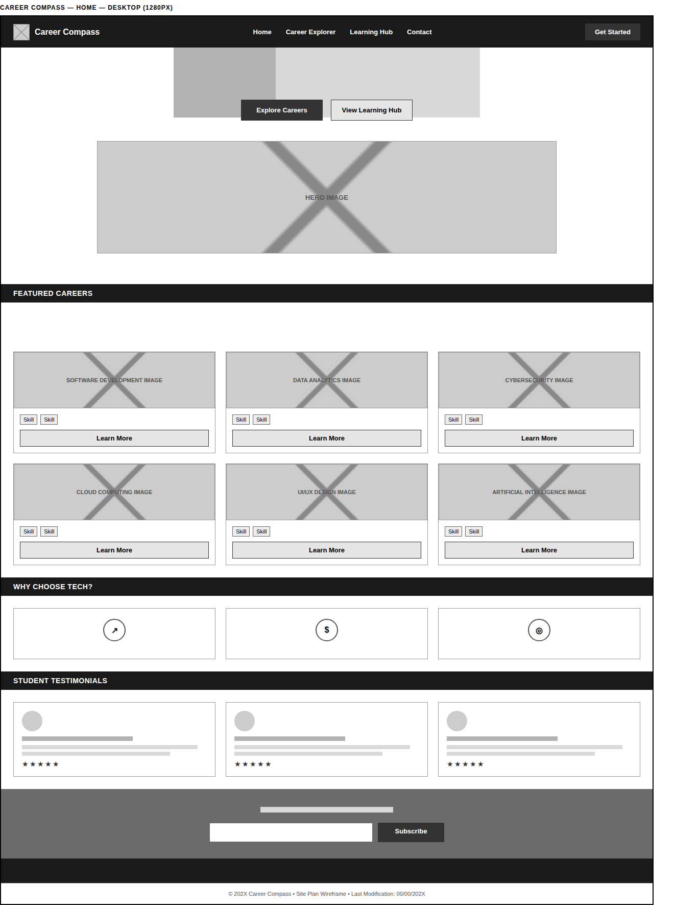
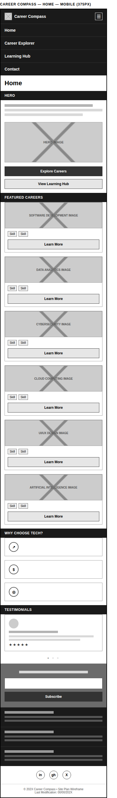

Zainab, 18
High School Graduate
Just finished secondary school and is curious about tech but has no coding background. She wants a low-pressure way to see which careers exist and which one might suit her before committing to a program.
WDD 231 • Individual Project Planning
A blueprint for Career Compass — who it's for, what it does, and how it's designed.
Career Compass
Represents guidance and direction for people building a career in technology — just as a compass helps travelers find the correct path, the site helps students, graduates, and career changers navigate the opportunities available in tech.
Optional domain: careercompass.tech
Career Compass is an informational website designed to help students, recent graduates, and career changers explore careers in the technology industry. It provides detailed information about tech career paths — including Software Development, Data Analytics, Cybersecurity, Cloud Computing, UI/UX Design, Artificial Intelligence, and DevOps — covering what each career involves, the skills required, recommended certifications, and beginner-friendly learning roadmaps.
The goal is to help visitors confidently choose a technology career path and understand the steps needed to begin.
High School Graduate
Just finished secondary school and is curious about tech but has no coding background. She wants a low-pressure way to see which careers exist and which one might suit her before committing to a program.
Career Changer
Currently in a non-technical role and looking to move into tech. He needs a realistic roadmap — skills to learn, certifications worth the time and money, and how long the transition typically takes.
Self-Taught Learner
Has been learning on and off from scattered YouTube videos and articles. She wants a single, trustworthy hub that organizes free and paid resources by career path instead of by random topic.
Navy Blue
#0F172A
Hero background, section number badges, headings
Sky Blue
#3B82F6
Links, buttons, hover states, active TOC item
Emerald Green
#10B981
Success indicators, site map node accents
Light Gray
#F8FAFC
Page background, card and panel fills
Aa
Poppins
Headings, section headings, navigation
Aa
Roboto
Body text, career descriptions, form labels
Aa
Fira Code
Code snippets, technical/JSON examples
The course rubric calls for a black-and-white wireframe of the Home page at both a small (mobile) and large (desktop/tablet) viewport, focused on structure and layout rather than final design. This can be either a hand-drawn sketch (photographed or scanned) or a wireframe built in a tool such as Balsamiq, Excalidraw, or Figma. The slots below are placeholders only: build or sketch the Home page for both viewports and replace each box with the image before submitting.
Desktop

Mobile
